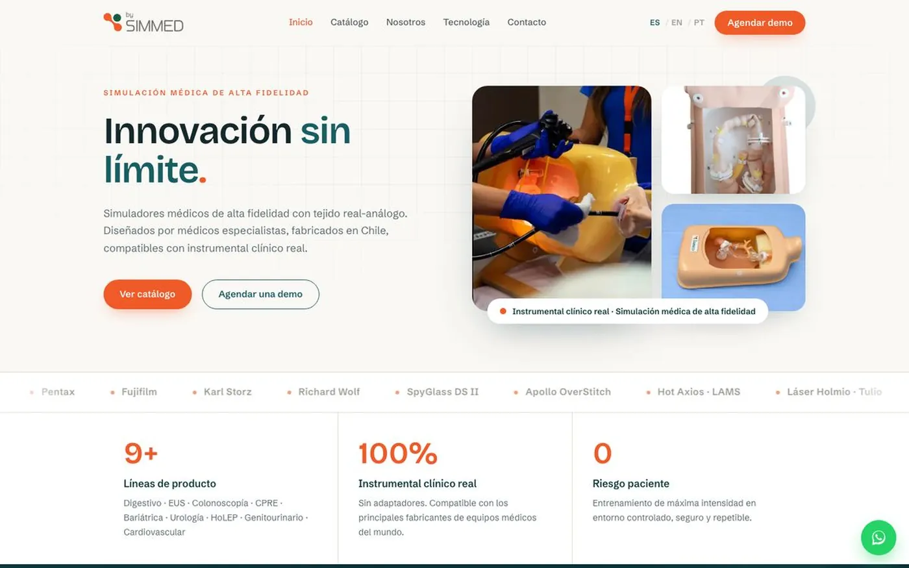

El problema
bySIMMED vende a un público muy específico: médicos especialistas y centros de formación clínica, en varios países. Ese comprador no decide por precio, decide por detalle técnico — con qué instrumental es compatible, qué procedimientos permite entrenar, qué tan realista es el tejido.
Nada de eso estaba disponible de forma ordenada, y menos en el idioma del comprador. Cada consulta terminaba siendo una conversación desde cero.

Qué construimos
Un sitio con catálogo, pensado como herramienta de venta técnica más que como folleto:
- Catálogo por líneas de producto, con las especificaciones que el especialista busca antes de preguntar.
- Compatibilidad declarada con el instrumental clínico real que ya usan en sus centros.
- Sitio completo en español, inglés y portugués, para los mercados donde venden.
- Agenda de demostraciones: el paso natural después de revisar el catálogo.
Las decisiones que importaron
La portada abre con el producto en uso, en un procedimiento real. Para este comprador eso comunica más que cualquier titular.
El multiidioma no se resolvió con un traductor automático encima: cada idioma es una versión propia del sitio, indexable por buscadores, porque buena parte de estos clientes llegan buscando un procedimiento específico en su idioma.